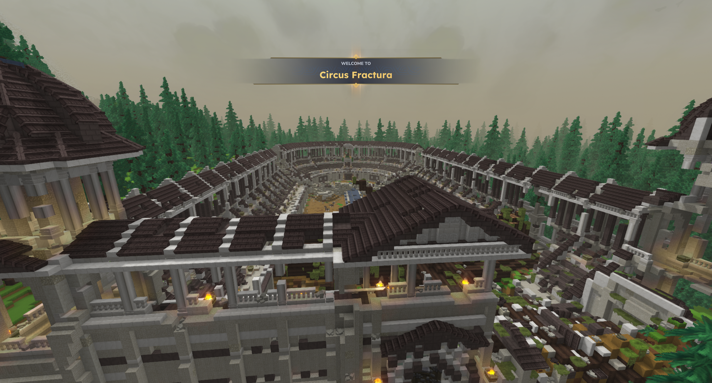
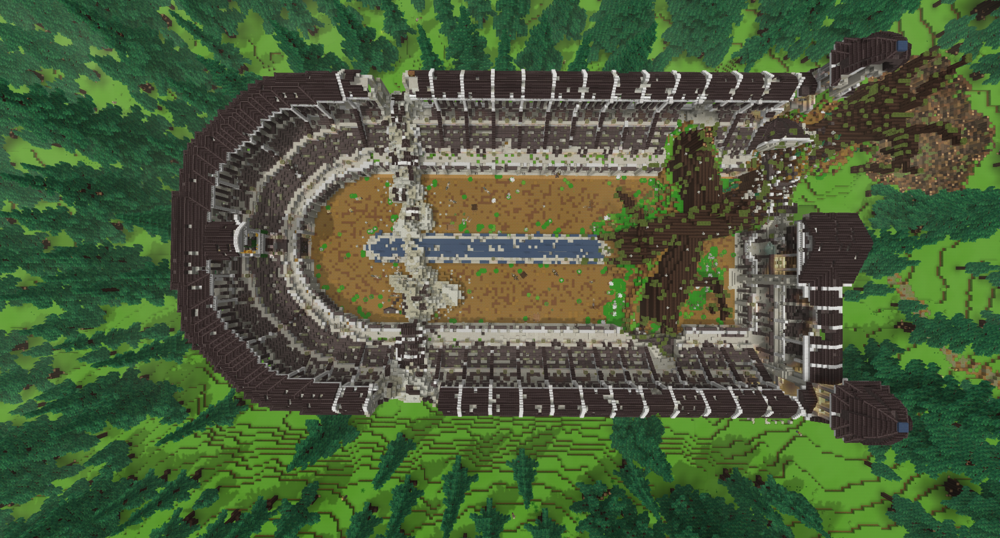
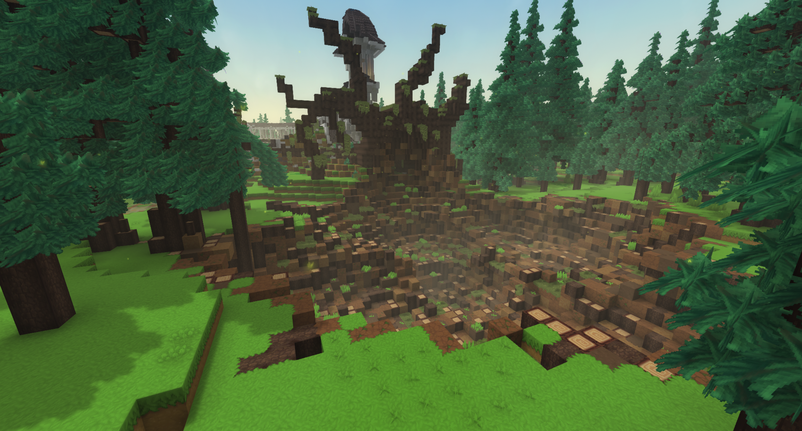
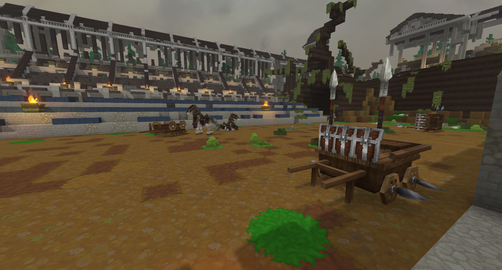
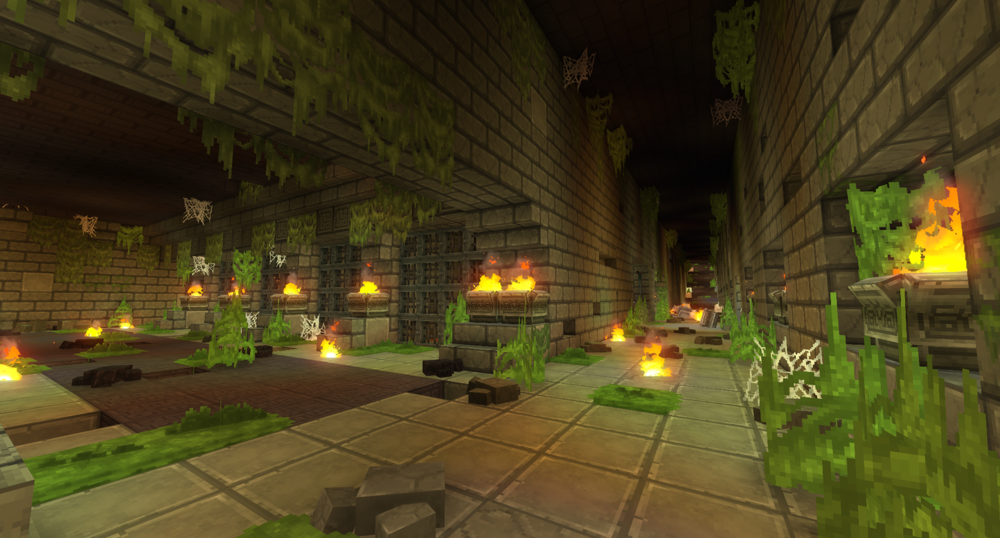
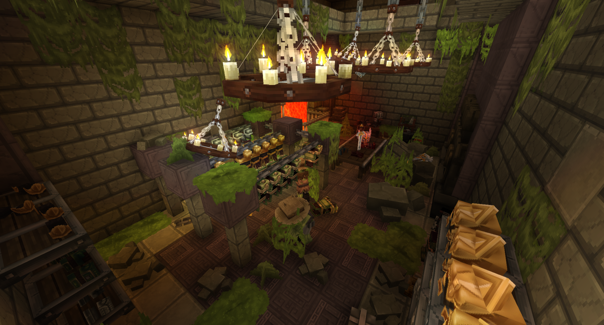
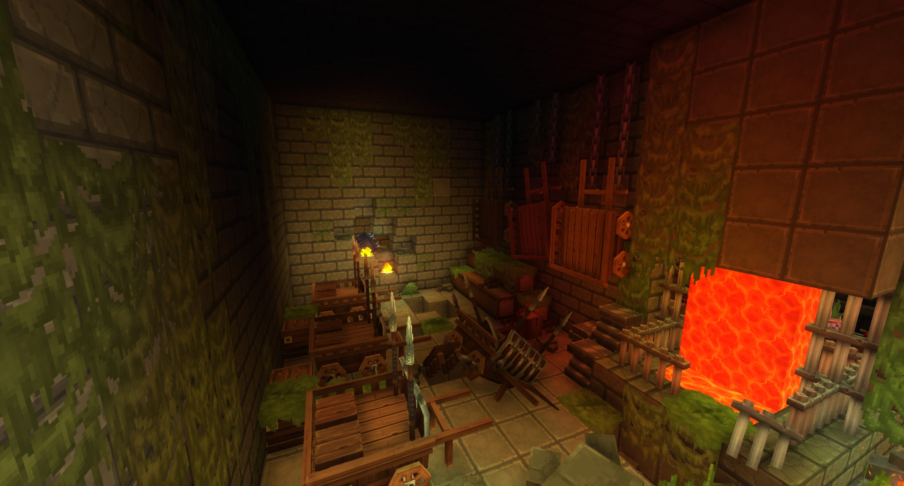
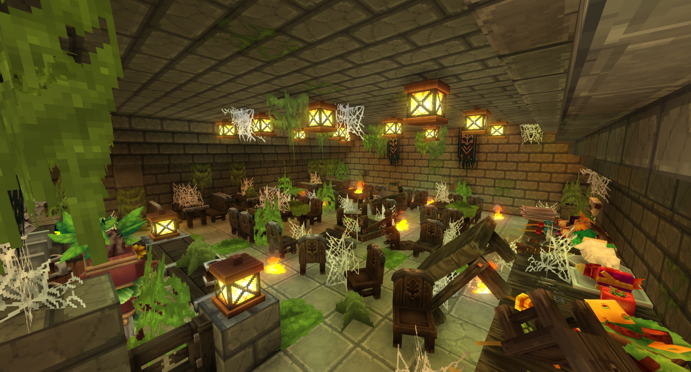
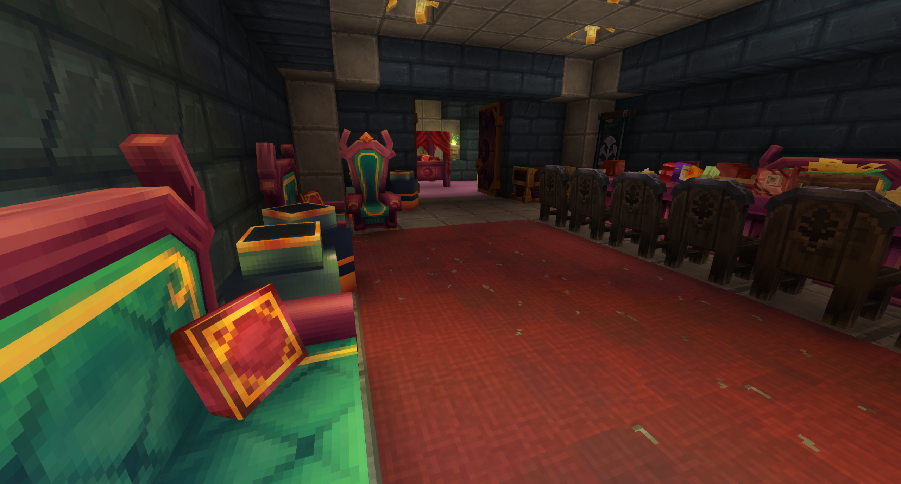

Once a grand arena of blood, glory, and thundering chariot races, Circus Fractura stands as a shattered monument to human desperation. Surrounded by a dense pine forest, this ancient Roman-style circus bears the deep scars of age, nature's wrath, and a sudden, violent end.
Circus Fractura

| Location Information | |
|---|---|
| Coordinates | X: 617, Z: 787 |
| Area Type | Rural Ruins |
| Mob Threat | Very High |
| Bandit Threat | High |
| Number of Chests | 19 |
| Water Source | Yes |
| Clean Water Source | No |
| Fireplace | No |
| Chef's Stove | No |
| Workbench | No |
| Available Loot | ||
|---|---|---|
| 🍎 Food | ✗ | |
| 🥛 Civilian | Tier 1 | ✗ | |
| ✂️ Civilian | Tier 2 | ✗ | |
| 🛠️ Civilian | Tier 3 | 4 | |
| 🛡️ Military | Tier 1 | ✗ | |
| ⚔️ Military | Tier 2 | 4 | |
| 🏹 Military | Tier 3 | 11 | |
| 🌟 Legendary | ✗ | |
Lore
Once a grand arena of blood, glory, and thundering chariot races, Circus Fractura stands as a shattered monument to human desperation. Surrounded by a dense pine forest, this ancient Roman-style circus bears the deep scars of age, nature's wrath, and a sudden, violent end.
The Shattered Arena
The majestic stone tiering and vaulted arches of the circus are now open to the elements. Time has taken a heavy toll on the grand structure: a massive, ancient tree has uprooted near the curve of the track, its fallen trunk crushing a vast section of the outer seating and battlements. Elsewhere along the perimeter, entire stone galleries have structural cave-ins, leaving piles of rubble, fractured masonry, and exposed earth spilling into the central arena. Abandoned chariots, fitted with spiked wheels and defensive plating, lie motionless on the dirt track where horses once galloped.
The First Sanctuary
According to northern lore, Circus Fractura was never intended to be a stronghold, yet it became one of the earliest temporary bases where survivors sought refuge during the initial wave of the undead outbreak. Drawn by its towering, thick stone walls and defensible entryways, hundreds of desperate citizens fled here to escape the rising horde.
What was once a venue for spectacle quickly transformed into a makeshift fortress. The open floor was retrofitted with defensive barricades and supply carts, while the subterranean corridors beneath the track were converted into living quarters, storage vaults, and emergency shelters.
Anatomy of the Underground Sanctuary
- The Subterranean Vaults: A sprawling network of mossy stone corridors lit by eternal braziers, featuring iron-gated holding cells and heavy storage bays.
- The Armory & Workshop: Tucked deep underground, this room contains anvil stations, racks of iron helmets, and glowing forge hearths where weapons were hastily forged to push back the undead.
- The Great Mess Hall: A claustrophobic, web-strung dining hall packed with long wooden tables, overturned chairs, and forgotten rations—evidence of a final meal interrupted by breach.
- The Quarters of the Patrician: Deep within the lowest levels lies a surprisingly luxurious chamber, fitted with velvet-trimmed seating, pristine red carpets, and private dining tables, reserved for the high-ranking leaders who oversaw the circus's defense.
Secrets Beneath the Dirt
While the surface arena remains a grim reminder of the past, the true secrets of Circus Fractura lie buried below the track. Hidden stairwells and cracked stone passages lead down into an extensive, forgotten underbelly. Those brave enough to venture into the darkness will navigate cobwebbed passageways, subterranean lava-fueled forge chambers, and abandoned quarters that still hold the gear, riches, and history of the survivors who made their final stand inside the arena.
The crowds have long gone silent, but inside the crumbling stone walls of Circus Fractura, the echoes of the world's first stand against the dead still ring true.
Gallery







